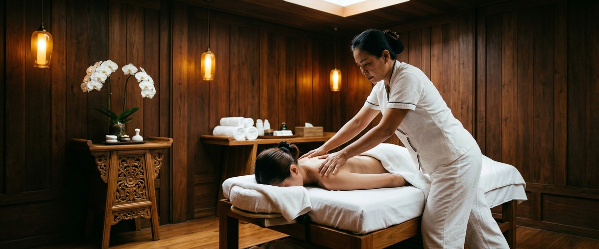
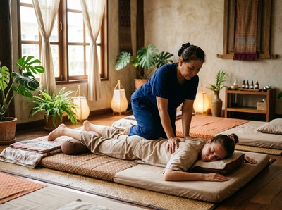
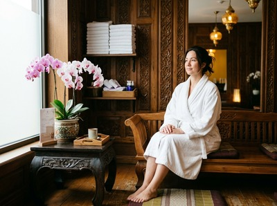

★★★★★ Quality gate failures: hook. Review and edit before removing this notice. ★★★★★
More Glaswegians are running, cycling, hitting the gym, and joining sports clubs than ever before — and that's a genuinely exciting shift. But when more people get active, more bodies need proper recovery.

The city's ten-year plan, Active Glasgow 2025-2035, is pushing hard to get residents moving. What it can't do is recover for you. That's exactly where Thai massage comes in.
The strategy was developed by Glasgow Life alongside NHS Greater Glasgow and Clyde, sportscotland, and Public Health Scotland. It responds to a clear problem: around 34% of Glasgow adults don't currently hit the recommended 150 minutes of moderate activity per week.

The goal is to change that, in a real and lasting way, over the next decade. But getting active — especially after a long break — comes with a physical cost. Muscles that haven't been worked in a while feel it. Joints carry new loads. Fatigue builds up.
Recovery isn't optional. It's what makes continued activity possible. If you've recently started a new fitness routine, book your session today at Glasgow Thai Massage and make recovery part of your programme from the start.
Traditional Thai massage is rooted in the Wat Pho tradition. It uses assisted stretching, acupressure, and work along the body's sen energy lines — making it well suited to recovery after sport or exercise.
It isn't just relaxing — it actively helps the body repair and adapt. Research in peer-reviewed journals has found that massage reduces markers of muscle damage and inflammation after hard exercise, and supports faster recovery of muscle performance.
Delayed onset muscle soreness — the deep ache you feel 24 to 48 hours after exercise — is one of the main reasons people stop before they've built a habit. Thai sports massage targets specific muscle groups with sustained pressure and assisted stretching. It tackles that post-exercise tightness directly. You recover faster, stay consistent, and build momentum instead of stalling every time your body protests.
A lot of people fall off new fitness routines because of injury. A tight hip flexor, a pulled hamstring, a sore lower back — these aren't inevitable, but they become more likely when the body isn't moving freely.
Unlike a standard Swedish-style massage, traditional Thai massage includes guided stretches that gently open the hips, shoulders, and spine. That improves range of motion in a way that passive rest simply doesn't.
For someone who's started cycling to work or taken up swimming, keeping that mobility is what makes the habit stick long-term. Maliwan and Jariya at Glasgow Thai Massage are both trained in the Wat Pho tradition, with over 20 years of combined practice. They know how to read the body's tension patterns and work with them, not against them.
The Active Glasgow strategy recognises that physical activity benefits mental health as well as physical health. The same is true of massage. When you exercise, cortisol — your body's main stress hormone — rises.
For most people, it returns to normal with enough recovery. But if you're already carrying high stress from work or city life, cortisol can stay elevated. That disrupts sleep and dulls the mood benefits exercise is supposed to bring.
Regular massage is one of the most effective ways to bring cortisol down and let the nervous system rest. Combined with an active lifestyle, it creates a recovery loop — you train, release tension, sleep better, and return to activity feeling fresh rather than worn down. If stress and poor sleep have made it hard to stay active in the past, book online now and see what an hour of proper recovery can do.
Glasgow Thai Massage is based at Floor 3, Victoria Chambers on West Nile Street — right in the city centre. Whether you're training at the Emirates Arena, running Kelvingrove, or cycling in from the South Side, the studio is easy to reach.

A recovery session doesn't need to be a rare treat. For anyone taking their activity seriously under Glasgow's new ten-year vision, regular massage is what separates people who sustain progress from those who keep starting over.
The city is building the infrastructure for an active Glasgow. The recovery side of that picture is something you have to build for yourself. Glasgow Thai Massage is here to help you do exactly that.
Traditional Thai massage uses assisted stretching, acupressure, and sustained pressure along the body's muscle and connective tissue. This reduces inflammation, eases delayed onset muscle soreness, and restores range of motion. Research shows massage can lower markers of muscle damage after hard exercise, helping you recover faster and get back to training sooner.
Active Glasgow 2025-2035 is a ten-year city strategy developed by Glasgow Life alongside NHS Greater Glasgow and Clyde, sportscotland, and Public Health Scotland. It aims to increase sport and physical activity across Glasgow, with a focus on communities where activity levels are currently low. Around 34% of Glasgow adults currently fall short of the recommended 150 minutes of moderate activity per week.
Yes. Thai massage suits people returning to exercise or building a new routine. It works gently on muscle tension and joint mobility, and you don't need to be flexible beforehand. It can help prevent the stiffness and minor injuries that often cause new exercisers to give up. Sessions at Glasgow Thai Massage are adapted to each person, so there's no need to be an athlete to benefit.
For someone training three or more times per week, a fortnightly session is a good starting point. If you're building intensity quickly or returning from a long break, a weekly session in the early stages helps your body adapt without too much soreness building up. Your therapist at Glasgow Thai Massage can advise on a schedule that fits your training load.
Glasgow Thai Massage is at Floor 3 Suite 4, Victoria Chambers, 142 West Nile Street, Glasgow G1 2RQ — in the heart of the city centre. It's easy to reach from Buchanan Street subway station and most city centre offices and leisure facilities. You can book your session online at the Glasgow Thai Massage website.